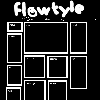
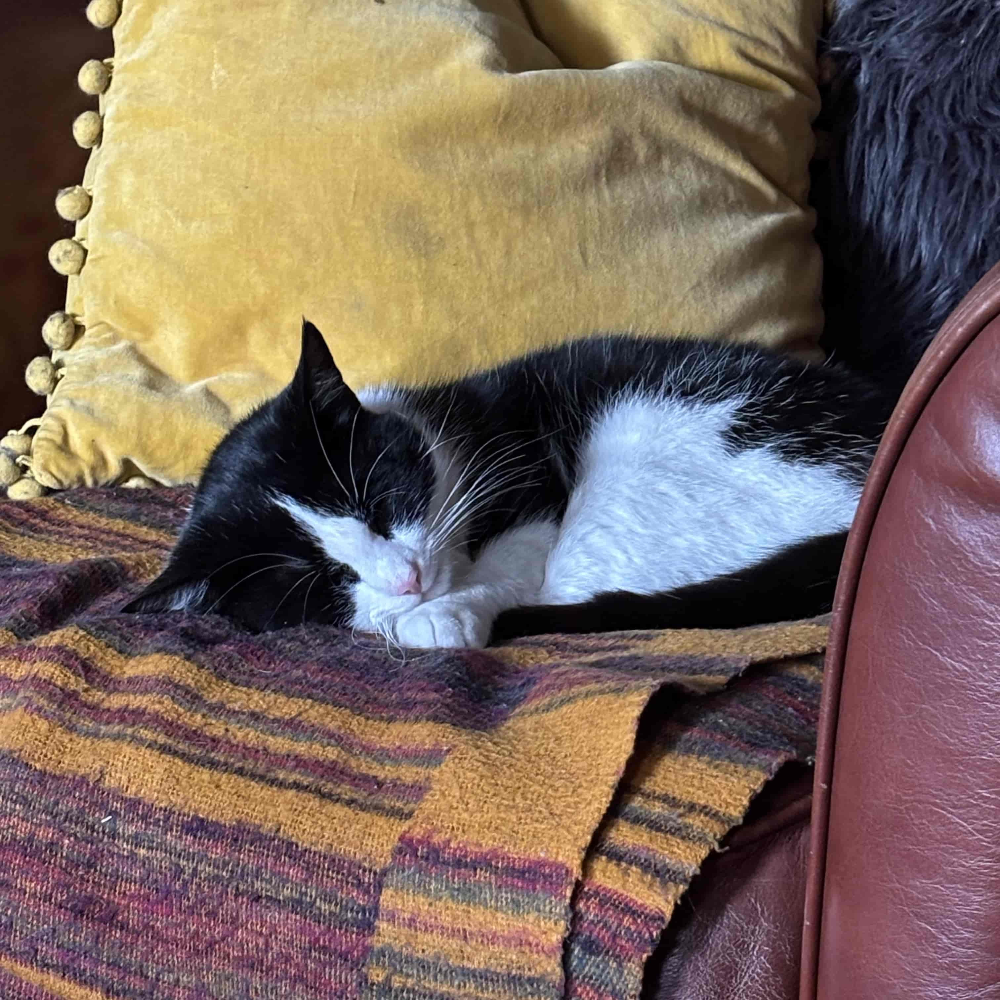

blog posts
-
switch 2 overview & mario kart wishlist | 2025-01-31
they revealed the switch 2 about two weeks ago and i wanted to talk about it and the new mario kart they revealed even though i made a blog and completely forgot about it. so let's talk about it! if u haven't watched the reveal here u go. brief overview of the switch 2. this is not the main subject of this post but i'll talk about it briefly...
-
i got a vr headset! + christmas haul | 2025-01-07

merry christmas and happy new year everyone. ik it was a while ago but whatever. i've been sorting out job stuff (very unsuccessfully) and just enjoying the break using the stuff i got for christmas. speaking of christmas! i've gotten to the point now where i don't know what i want for christmas (until a week before). anything i would want are waaaay too expensive...
-
how i made this site | 2024-11-27
making a website is not hard at all. the hardest part is when u start but when you have a functional website, adding to it is very easy. in this blog post i'll share the process i did when making my mid website. first all go to neocities/nekoweb to pick a name for your website! you can change this anytime but it will break search engines and links...
-
webfishing | 2024-11-22
i've been playing a new game recently called webfishing! it's basically just a chatroom with a fishing minigame, and considering fishing minigames are the peak of games it's a genius idea. the objective of the game is to fish..... then u sell those fish and earn money to buy upgrades so u can fish bigger and better fish and get more money and more upgrades...
-
new blog | 2024-11-17
i made a blog! this was only possible since switching my site to 11ty which i thought would be complicated but it wasn't too bad. i thought a static site generator would be very complex but it's literally just making a template and adding onto it, then the computer just creates the html files which are just normal html files...